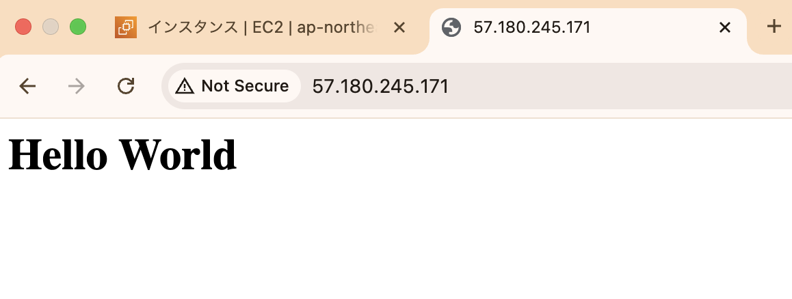

第1回：AWSの特徴とアカウント作成、EC2ハンズオン
はじめに
このセッションでは、AWSの基本概念を学んだ後に、AWSアカウントを作成しセキュリティや課金に対する設定をします。時間に余裕があれば、ハンズオンとしてEC2を使い「Hello World」を表示するWebページを作成します。
このセッションで学べること
- クラウドの利点と注意点
- 責任共有モデルの考え方
-
グローバル展開を支えるAWSインフラの基本
（リージョン / AZ / エッジロケーション） - アカウント作成とセキュリティ設定（IAM, MFA, 課金確認方法、課金時のアラートなど）
- ハンズオン：EC2でWebページ公開
1. AWSとは
1.1 AWSの概要
AWS（Amazon Web
Services）は、Amazonが提供する世界最大級のクラウドサービスプラットフォームです。サーバーやデータベース、ストレージ、ネットワークなど、ITインフラに必要なあらゆる機能を、インターネットを通じてオンデマンドで利用できます。
1.2 クラウドが普及する理由とその注意点
オンプレミスを使用するより、便利でコストを抑えられるケースが多いというのがクラウドが普及する理由ですが、AWSはクラウドのメリットとして以下を述べています。
※オンプレミス - 物理的なサーバーを自社運用すること
クラウドコンピューティングの6つの利点（公式link）
-
初期費用が不要（従量課金）
サーバーやデータセンターに先に大きな投資をする必要がなく、使った分だけお金を払う「従量課金制」。使い始めるハードルが低くなります。 -
スケールメリットによる低コスト
世界中の多くのユーザーとインフラを共有することで、AWSは大規模なスケールでコストを抑え、その分低価格なサービスを提供できます。 -
キャパシティの事前見積もりが不要
利用者はリソースの数を事前に見積もる必要がなく、必要に応じてすぐに増減できます。これにより、無駄な設備投資や処理不足の心配がなくなります。 -
スピードと俊敏性の向上
新しいサーバーやストレージを数分で立ち上げられるため、開発や検証のスピードが格段に上がり、アイデアをすばやく形にできます。 -
運用負担の軽減
物理的なサーバーやデータセンターの保守・運用から解放され、本来集中すべきプロジェクトやサービスの開発に時間を使えるようになります。 -
グローバル展開が簡単
世界中の複数リージョンにアプリケーションを数クリックで展開可能。お客様に近い場所でサービスを提供でき、遅延を減らせます。
クラウドコンピューティングの注意点
こちらはGCP(Google Cloud Platform)のページを参考にしたクラウドの注意点になります。これらのリスクは、プロバイダのサービスを正しく理解し、慎重に評価選定、運用することで、抑えることができます。
-
インターネット接続に依存
クラウドはネット経由で利用するため、通信環境が悪いとアプリやデータにアクセスできなくなります。オフライン時の業務継続を考慮する必要があります。 -
サービス停止のリスク（障害・災害など）
たとえ大手クラウドでも、自然災害や技術的トラブルにより、一時的にサービスが停止することがあります。重要なサービスは冗長化や多リージョン展開が推奨されます。 -
ベンダーロックインの可能性
一度特定クラウドに依存した設計をすると、他のクラウドやオンプレミスへの移行が難しくなることがあります。ポータビリティを意識した設計が必要です。 -
自由に制御できない領域がある
物理インフラや一部のネットワーク設定など、クラウドでは利用者が直接制御できない範囲もあります。特定用途では柔軟性が制限される可能性もあります。 -
セキュリティとプライバシーの懸念
クラウドのセキュリティにはユーザーの責任も含まれます。設定ミスによる情報漏洩や、不十分なアクセス制御がリスクとなるため、設計段階から対策が必須です。 -
予期せぬコストの発生
使った分だけ課金される仕組みは便利ですが、使いすぎると想定以上の請求が来ることも。リソースの自動停止やコストアラートなどで管理体制を整える必要があります。
1.3 責任共有モデル（公式link）
AWSに限らず、主要なクラウドベンダーは「責任共有モデル」という考え方を採用しており、ユーザーとベンダーがそれぞれ異なる範囲の責任を持つことが明確に定義されています。

AWSの一般的な責任共有モデル
AWSの責任範囲（Security of the Cloud）
- データセンターの物理セキュリティ（入退室管理、防災対策など）
- ハードウェア（サーバー/ネットワーク/ストレージ）の管理
- 仮想化基盤（Hypervisor）のセキュリティと保守
ユーザーの責任範囲（Security in the Cloud）
-
インスタンス & OS管理
- EC2のゲストOS・ミドルウェアの更新・パッチ適用
- インスタンスレベルのファイアウォール設定
-
データ保護
- 保存/転送データの暗号化（S3/EBS/RDSなど）
- バックアップ・ライフサイクル管理
-
アクセス制御
- IAM（最小権限・MFAの適用）
- サービスごとの権限設定（例：S3バケットポリシー）
-
ネットワーク設定
- セキュリティグループ・ネットワークACL
- VPC設計（サブネット/NATゲートウェイなど）
-
マネージドサービスの設定監視
- S3/RDS/Lambdaなどの公開設定・暗号化
サービスによって責任範囲は変わる

サービス・タイプ別責任共有モデル（link）
たとえばEC2のようなIaaSの場合、OSやアプリケーションの管理もユーザーの責任です。逆に、S3やDynamoDBなどのマネージドサービスでは、OSやミドルウェアはAWSが管理してくれます。
つまり、使うサービスによって、ユーザーが責任を持って管理する範囲が変わるという特徴があります。
※ IaaS(アイアース) - Infrastructure as a
Serviceの略であり、仮想サーバーやストレージなどのインフラを提供するクラウドサービスを指す
※ マネージドサービス - 設定や運用をクラウド側に任せられるサービス
メリットと注意点
- メリット：オンプレミスと比べて、クラウドでは物理サーバーやネットワーク機器の運用が不要になり、インフラ面のセキュリティもクラウドベンダーに任せられます。現在では、より多くの領域を自動管理できるマネージドサービスの利用が主流となっており、セキュリティ強化と運用コスト削減の両面から推奨されています
-
注意点：AWSの責任範囲とユーザーの責任範囲をサービスごとに把握し、設計・運用を行う必要があります
1.4 Well-Architected Framework（公式link）
AWSには安全かつ効率的にシステムを設計・運用するための指針として、 Well-Architected Framework があります。これは推奨される設計・運用のベストプラクティスをまとめたもので、セキュリティやコスト、障害対策など、現場で直面しやすい課題に対応しやすくなり、クラウドを安全に活用する上で重要です。
6つの柱と設計原則
Well-Architected Frameworkは、次の6つ柱から構成され、それぞれに複数の設計原則が定められています。以下は6つの柱の概要になります。
| 柱 | 説明 |
|---|---|
| 運用上の優秀性 | システムが安定して動くように、状態を見守ったり、トラブルが起きたときにすぐ気づける仕組みを作ることがポイントです。日々の作業を自動化したり、手順を明確にして、継続的に改善していくことが求められます。 |
| セキュリティ | 大切なデータを守り、不正なアクセスがないようにすることが重要です。誰がどの情報にアクセスできるかを正しく管理し、異常が起きたらすぐに対応できる体制を整えます。 |
| 信頼性 | サービスがいつでも正しく動くこと、そして問題が起きてもすぐに復旧できる仕組みを用意することが目標です。たとえば、サーバーが落ちても別の場所で代わりに動くような「冗長構成」などが含まれます。 |
| パフォーマンス効率化 | システムが無駄なく、素早く動くようにするために、最適なサーバーの種類や数を選びます。状況に応じて自動的に調整できるようにして、必要なときに必要なだけ使えるようにするのが理想です。 |
| コスト最適化 | 必要以上にお金をかけすぎないようにするのも大切です。使っていないリソースを止めたり、もっと安くできる方法がないかを常に見直します。 |
| 持続可能性 | クラウド使用時に、地球環境への影響を最小限に抑えることは重要です。影響を把握し、必要なリソースの見直し、電力消費を抑えるなど、持続可能なシステムを目指します。 |
Well-Architected
Frameworkの内容は豊富なのですが、その豊富さのため初学者でなくても使いこなすのは容易ではありません。
以下のAmazon Web Services
Japan公式YouTubeの動画やわかりやすく解説しているサイトを参照することをお薦めいたします。
AWS Well-Architected Framework 入門編【AWS Black Belt】
1.5 AWSグローバルインフラストラクチャ（公式link）
AWSは世界中にデータセンターを展開しており、高可用性・低レイテンシ・災害対策を実現するために、グローバルで分散されたインフラを構築しています。ここでは主要な構成要素であるリージョン、アベイラビリティーゾーン、エッジロケーションについて紹介します。
🌍 リージョン
AWSのリージョンとは、地理的に分離された物理的なロケーションのことです。2025年時点で、世界に37のリージョンが存在し、日本には「東京リージョン」や「大阪リージョン」、アメリカには「バージニアリージョン」などがあります。各リージョンには、最低でも3つ以上のアベイラビリティーゾーン（AZ）が含まれています。

AWS グローバルインフラストラクチャマップ（2025年6月現在）
🏢 アベイラビリティーゾーン（AZ）
アベイラビリティーゾーン（AZ） は、独立したデータセンター群(1つ以上のデータセンターで構成)のことであり、1つのリージョンに最低3つ以上のAZが存在します。たとえば、東京リージョンには「ap-northeast-1a」「ap-northeast-1c」「ap-northeast-1d」などのAZが存在します。
リージョンとAZのイメージ
各AZは、個別の電力供給、ネットワーク設備、冷却システムを持ち、高帯域かつ低レイテンシーの専用ネットワーク相互接続されています。こうした特徴から、複数のAZを組み合わせることで高可用性・耐障害性・拡張性を実現するシステム構成が可能です。たとえば、システムを複数のAZに分散して構築し、冗長性を持たせることで、災害時など1つのAZに障害が発生しても、安全にサービスを継続できます。
※ 可用性（Availability）-
システムが継続して稼働できる度合いや能力
※ 耐障害性（Fault Tolerance）-
システムが障害に対してどれだけ耐えられるかの能力
※ 拡張性（Scalability）-
システムが負荷に応じてリソースを追加できる能力
AZ同士は数キロ〜100km以内の物理的に意味のある距離で分離されています。
エッジロケーション（Edge Location）
AWSのコンテンツ配信サービス（CloudFrontなど）で利用される、「キャッシュ専用のサーバー拠点」です。
世界700以上の都市に設置されており、ユーザーに最も近い場所からコンテンツを配信することで、表示速度を大幅に改善できます。
たとえば、東京にあるWebサイトへアメリカのユーザーがアクセスした場合でも、アメリカ国内のエッジロケーションに保存されたキャッシュからデータを取得することで、太平洋を横断する距離の通信が発生せず、高速にページを表示できます。
2. AWSアカウント作成とセキュリティ設定
2.1 AWSアカウント開設
通常はこちらを開きます。
ページ内の作成の流れ(ステップ1~5)を確認し、「今すぐ無料サインアップ」からアカウント作成を進めます。作成の流れは確認しながら進めることができます。
パスワードは忘れないようお気をつけください。難しいところはないと思いますが、ステップ2の連絡先情報の入力は決まったフォーマットがある為、下の図を参考にしてみてください。
またステップ5は無料のベーシックサポートを選択します。

ステップ2の参考画面 フォーマットに注意する必要があります
無事に作成ができ、以下の画面が出たら、「AWSマネジメントコンソールにお進みください」をクリックしましょう。
自動的にルートユーザーとしてサインインした状態でAWSマネジメントコンソールに遷移します。
ルートユーザーとIAMユーザーの使い分け
現在はルートユーザーにサインインしている状態です。
ルートユーザーはAWSアカウントを作成したときに設定したメールアドレスとパスワードでサインインすることができます。
ルートユーザーはアカウントの所有者であり、すべてのAWSサービスに対する完全なアクセス権限を持っています。そのため、セキュリティ上の理由から、日常的な操作ではなく、特別な操作を行うときのみ使用することが推奨されます。
後ほどIAMユーザーというものを作成し、それ以降はルートユーザーの代わりにIAMユーザーを使用します。

サインイン画面: ルートユーザーとIAMユーザーどちらを使用するか選ぶことができます
マネジメントコンソールのリージョン注意点
左上のリージョンの表示が「アジアパシフィック(東京)」か確認してください。まれに画面遷移をしていると、バージニア北部など違うリージョン設定になる場合があるため注意してください。気づいたら東京リージョンに変更しましょう。
表示がグローバルとなることがありますが、こちらは問題ありません。リージョン単位ではないAWSのサービスはグローバルの表示になります。
AWS課金額の確認方法
①請求とコスト管理
マネジメントコンソール右上の検索窓にbillingと入力し、「Billing and
Cost Management」を選択します。
 請求とコスト管理ホームが表示され、請求額の確認ができます。アカウントを作成した直後は以下のようにデータ利用不可と表示されます。
請求とコスト管理ホームが表示され、請求額の確認ができます。アカウントを作成した直後は以下のようにデータ利用不可と表示されます。
 より詳しい内容は「請求書」または「Cost
Explorer」から確認できます。
より詳しい内容は「請求書」または「Cost
Explorer」から確認できます。

②請求書
月ごとの請求内容を印刷からPDFでダウンロードできます。サービス別料金の確認もできます。


③Cost Explorer
月ごとの利用料金やサービス別の課金状況がグラフで確認できます。右側のパラメータを使い表示内容を設定できます。
予算(Budgets)を使用し、意図せぬ課金時にメール通知を設定
「請求とコスト管理」から「予算」を選択します。
 予算を作成を選択し、下の図を参考に設定を進めます。
予算を作成を選択し、下の図を参考に設定を進めます。
 上記で設定すると、予算額に対して以下の３つのパターンの通知が設定されます。
上記で設定すると、予算額に対して以下の３つのパターンの通知が設定されます。
予算額が$10の場合
1) 実際の支出が 85% ($8.5)に達したとき
2) 実際の支出が 100% ($10)に達したとき
3) 予測される支出が 100% ($10)に達すると想定されるとき
さらに、作成した予算を編集することで、しきい値の変更や新しいアラートの追加が可能です。
下の動画では実際の支出を85%から20%($2)に変え、さらに実際の支出が50%($5)のアラートも追加しています。

IAM ユーザーおよびロールによる請求情報へのアクセス
現在の状態ではルートユーザーからしか請求情報を見ることができません。それでは不便なため、このあと作成するIAMユーザーでも請求情報を見られるように設定を変更します。
マネジメントコンソール画面左上のユーザー名をクリックし、メニューから「アカウント」を選択します。

アカウント画面を半分以上スクロールダウンし、「IAMユーザーおよびロールによる請求情報へのアクセス」のセクションを探し、編集を押します。
 IAMアクセスをアクティブ化をチェックし更新を押します。
有効化済みになることを確認します。
IAMアクセスをアクティブ化をチェックし更新を押します。
有効化済みになることを確認します。
IAMユーザーの作成
「IAM」サービスから新しいユーザーを作成し、管理者権限（AdministratorAccess）を付与します。
マネジメントコンソールの検索窓にiamと入力し、IAMサービスを選択します。
 IAMサービスの画面が表示されます。左側のメニューから「ユーザー」を選択します。
IAMサービスの画面が表示されます。左側のメニューから「ユーザー」を選択します。
「ユーザーを作成」を押します。
 ユーザー名を入力し、「AWSマネジメントコンソールへのユーザーアクセスを提供する」にチェック、「IAMユーザーを作成します」を選択、カスタムパスワードを選択し任意のパスワードを入力、次へを押します。
ユーザー名を入力し、「AWSマネジメントコンソールへのユーザーアクセスを提供する」にチェック、「IAMユーザーを作成します」を選択、カスタムパスワードを選択し任意のパスワードを入力、次へを押します。
パスワードは忘れないようにしてください。
許可を設定で「ポリシーを直接アタッチする」を選択し、許可ポリシーから「AdministratorAccess」を選択し、スクロールダウンして次へを押します。
※ポリシーはJSONで書かれています。ポリシーなどのIAMは次回学習します
確認画面が表示されるので、内容を確認し、問題なければ「ユーザーの作成」を押します。
ユーザーの作成が完了すると、以下のような画面が表示されます。ユーザーリストに戻るをクリックして戻りましょう。
MFA認証の設定
セキュリティのため、ルートユーザーとIAMユーザー両方に必ず多要素認証（MFA）を設定してください。
ルートユーザーから設定します。画面左上のアカウント名をクリックし、メニューから「セキュリティ認証情報」を選択します。
 「多要素認証（MFA）」セクションの「MFAデバイスの割り当て」をクリックします。
「多要素認証（MFA）」セクションの「MFAデバイスの割り当て」をクリックします。

MFAデバイスを選択します。デバイス名は任意のものを指定できます。
「パスキーまたはセキュリティキー」がセキュアで操作も簡潔で優れています。
(生体認証やPINを使用したiCloud キーチェーン、Google
パスワードマネージャーなどが使用可)
認証アプリケーションは、Google AuthenticatorやMicrosoft
Authenticatorなどのアプリが利用できます。
選択後は「次へ」を押して、画面の指示に沿って設定をお願いします。
可能であれば、複数のMFAデバイスを設定してください(公式で推奨されています)。MFAデバイス紛失時などサポートに連絡することなく、予備のMFAデバイスを使用しアカウントへサインインでき、ルートユーザーのパスワード変更ができます。
ルートユーザーのMFAが設定し終わりましたら、IAMユーザーにも同様にMFAを設定していきます。
IAMの左メニューから「ユーザー」を選択し、先ほど作成したIAMユーザーを選択します。
「セキュリティ認証情報」タブを選択し、「MFAデバイスの割り当て」を押します。以降は先ほどと同じ手順でMFAを設定します。
エイリアスの設定
エイリアスはアカウントIDの代わりに使用できる名前です。必須ではないですが、サインイン時に利用でき、覚えやすく便利です。
IAMダッシュボード左側にエイリアス作成ボタンがあります。名前は自由に設定できますが、他のユーザーが既に利用しているものは使えません。

IAMユーザーでサインイン
ここまでルートユーザーにサインインしていましたが、今後はIAMユーザーを使用し学習します。
画面左上のメニューから、アカウントIDまたはエイリアスをコピーしておきましょう、サインイン時に必要になります。
コピーしたらルートユーザーからサインアウトします。
画面遷移後に、「もう一度ログインする」、または「コンソールにサインイン」を押します。

下の画面1か2のどちらかが表示されます。画面1の場合IAMユーザーを選択し、アカウントIDまたはエイリアスを入力し次へを押すと、画面2へ移ります。
画面2の場合アカウントIDまたはエイリアス、IAMユーザー名、パスワードを入力しサインインします。

画面1: IAMユーザー選択、アカウントIDまたはエイリアスを入力
画面2: アカウントIDまたはエイリアス、IAMユーザー名、パスワードを入力
MFA認証を求められるため、各自で設定したMFAに沿って認証をします。
これでIAMユーザーでのサインインができました。
以降はこのIAMユーザーを使用して学習を進めていきます。
ルートユーザーは特別な操作を行うときのみ使用し、日常的な操作では使用しないようにしましょう。
3. ハンズオン:WebページをEC2で作ってみよう
せっかくアカウントを作ったので、試しにEC2(仮想サーバー)を立ち上げてみましょう。EC2の詳しい説明は次回行いますが、簡単に作成できクラウドの利便性を実感できるはずです。
ここでは、「Hello
World」を表示するWebページをEC2に作り、ブラウザからページを確認することをゴールとします。
ハンズオンの流れ
-
EC2インスタンス作成
(設定内容:名前とタグ、キーペアの選択、ネットワーク設定、高度な詳細) - 上記設定の中で、スクリプトを使いウェブサーバーとWebページをEC2内に作成
- ブラウザからEC2のIPアドレスにアクセスし、ページに「Hello World」が表示されるのを確認
手順
- EC2を検索します
- EC2ダッシュボードに移動し「インスタンスを起動」
- インスタンスの設定画面になります
- 名前とタグ: 任意の名前をつけます
-
キーペアの選択：キーペアなしで続行を選択します
※ 今回はSSH接続をしないため - ネットワーク設定：SSHトラフィックを許可のチェックを外し、インターネットからのHTTPトラフィックを許可を選択します
- 一番下までスクロールダウンし「高度な詳細」をクリックして広げます
- 「高度な詳細」の中をさらに一番下までスクロールダウンすると、ユーザーデータのオプションがあります ユーザーデータに以下の内容をそのままコピーして入力し、「インスタンスを起動」を押します
- 「すべてのインスタンスを表示」を押します
-
インスタンスが作成され正常に実行されるのを待ちます。インスタンスの状態が保留中から実行中に変わり、ステータスチェックが完了するまで1~3分ほどかかります
- パブリックIPv4アドレス(パブリックDNSでもOK)にアクセスします。「オープンアドレス」をクリックすると、ブラウザに新しいタブが開かれます
- 今回の設定ではhttps接続によるアクセスはできないため、アドレスバーをクリックしhttpsをhttpに変更します
-
Hello Worldが表示されれば、今回のハンズオンは大成功です🎉
EC2インスタンスを無事に作成でき、Webページの表示からも正常に動いていることが確認できました


#!/bin/bash
# EC2（Linux）に最初から入っているソフトウェア（パッケージ）をまとめて最新に更新
yum update -y
# EC2にApache（ウェブサーバー）をインストール
yum install -y httpd
# Apacheサービス（ウェブサーバー）を起動
systemctl start httpd
# EC2を再起動しても自動的にApacheが起動するように設定
systemctl enable httpd
# 「Hello World」と表示されるWebページ（HTMLファイル）を作成
echo "<h1>Hello World</h1>" > /var/www/html/index.html
※このスクリプトは、ブラウザからインスタンスのパブリックIPアドレスやDNS名にアクセスしたときに「Hello
World」と表示するためのものです。
ユーザーデータにこのスクリプトを書くと、EC2インスタンスの初回起動時に自動的に実行されます。
ユーザーデータは学習用途でよく使われるほか、一部の実務現場でも初期構成や簡易デプロイに活用されることがあります。

保留中の表示
実行中及びステータスチェックの初期化表示

ステータスチェックが合格した状態
後片付け
ハンズオンで作成したリソースを削除しましょう。
使っていないリソースを放置していると、不要な課金が発生するだけでなく、安全な設計でない場合セキュリティ上のリスクも伴います。意図せず別のリージョンにリソースを作成し、そのまま気づかず忘れてしまうことは避けたいです。
新規アカウントの無料枠により、EC2インスタンス1つであれば1年間は課金が発生することはありませんが、削除方法の確認のためにも、セッションで作成したリソースは必ず削除をお願いいたします。
削除手順
-
削除するEC2インスタンスを選択し、「インスタンスの状態」を選択し、「インスタンスを終了」を選択します。
- 確認画面が表示されるので、終了を押します。
-
削除中はインスタンスの状態が「シャットダウン」になります。
-
少し待ち更新ボタンを押すと、インスタンスの状態が「終了済み」になります。
これでEC2インスタンスの削除は完了です。
-
次にセキュリティグループを削除します。
左側のメニューから「セキュリティグループ」を選択します。
-
セキュリティグループの詳細画面が表示されます。
※ 皆さんの画面では、セキュリティグループが二つ（「launch-wizard-1」と「default」）あるはずです。
-
launch-wizard-1のセキュリティグループを選択し、上部の「アクション」から、「セキュリティグループを削除」を選択します。
-
確認画面が表示されるので、削除を押します。
-
これでセキュリティグループの削除は完了です。お疲れさまでした🍵
※ 削除してもセキュリティグループの表示が残る場合がありますが、時間が経ってから更新ボタンを押すと消えます。他のリソースでも同様のことは起こります。
※ defaultのセキュリティグループは削除できないため、残っていて問題ありません。


おわりに
アカウントの作成では設定するものが多く大変だったと思います。責任共有モデルの話を最初にした通り、AWSのセキュリティは非常に高いですが、それは私たちユーザー側がそれぞれのサービスを正しく理解し、設計・構築・運用を行った場合に限ります。
もし設定に不明点があれば(特にMFA)、曖昧なまま使用はせず確認をお願いいたします。
次のセッションではVPC(クラウド上の仮想ネットワーク)を扱いますが、実は今回作成したEC2インスタンスでも、デフォルトVPCという最初から用意されたVPCを使っていました。
ただ本番環境ではセキュリティ上の理由からデフォルトVPCは使われず、自分たちでVPCを設計する必要があります。
次回はセキュリティグループなどVPC周りの基礎知識について学んだあと、ハンズオンとしてVPCの構築とEC2のデプロイを行います。
気になることがありましたら、質問版のご利用をお願いいたします！